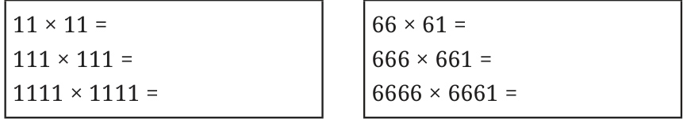
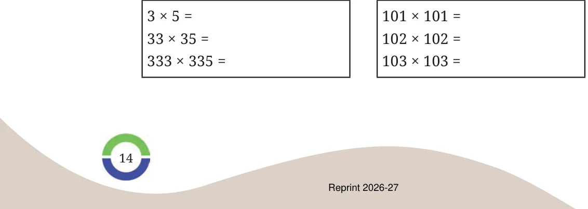
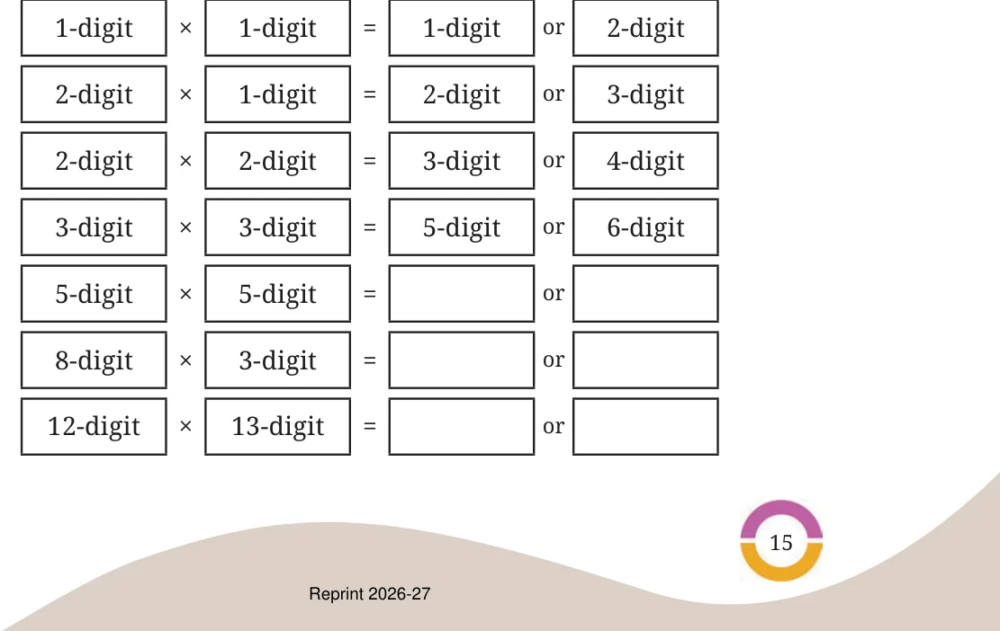

In each of the following boxes, the multiplications produce interesting patterns. Evaluate them to find the pattern. Extend the multiplications based on the observed pattern.


Observe the number of digits in the two numbers being multiplied and their product in each case. Is there any connection between the numbers being multiplied and the number of digits in their product?
Roxie says that the product of two 2-digit numbers can only be a 3- or a 4-digit number. Is she correct?
Should we try all possible multiplications with 2-digit numbers to tell whether Roxie’s claim is true? Or is there a better way to find out?
She explains her reasoning: “We want to know about the number of digits in the product of two 2-digit numbers. To know the smallest such product I took \(10 \times 10\), so all other products will be greater than 100. To know the greatest such product I multiplied the smallest 3-digit numbers \((100 \times 100)\) to get 10,000; so the product of all the 2-digit multiplications will be less than 10,000.”
Can multiplying a 3-digit number with another 3-digit number give a 4-digit number?
Can multiplying a 4-digit number with a 2-digit number give a 5-digit number?
Observe the multiplication statements below. Do you notice any patterns? See if this pattern extends for other numbers as well.
